This vignette compares the speed of cppally sorting, group ID generation, and statistical functions against base R, ‘data.table’, and ‘collapse’. Base R radix-sorting is already very fast, while the latter two packages implement efficient grouped calculations. We will cover:
- Sorting
- Group IDs
- Statistical summaries
- Grouped statistical summaries
This vignette was built on a laptop with an Intel Core Ultra 5 125H (14 cores: 4 performance and 10 efficiency, 18 threads) and 16 GB of RAM, running Windows 11 and R 4.6.0 on 17 Oct 2026.
Setup
library(cppally)
library(bench)
library(ggplot2)
library(purrr)
library(data.table)
#> Warning: package 'data.table' was built under R version 4.6.1
#> data.table 1.18.6.1 using 9 threads (see ?getDTthreads). Latest news: r-datatable.com
#>
#> Attaching package: 'data.table'
#>
#> The following object is masked from 'package:purrr':
#>
#> transpose
#>
#> The following object is masked from 'package:base':
#>
#> %notin%
library(collapse)
#> Warning: package 'collapse' was built under R version 4.6.1
#> collapse 2.1.8, see ?`collapse-package` or ?`collapse-documentation`
#>
#> Attaching package: 'collapse'
#>
#> The following object is masked from 'package:data.table':
#>
#> fdroplevels
#>
#> The following object is masked from 'package:stats':
#>
#> DPreamble
Sorting benchmarks are compared using multiple threads and a single thread. All libraries are set to the same number of threads. Base R and ‘bit64’ are always single-threaded.
n <- 1e06
# CRAN machines are limited to 2 threads
max_threads <- if (nzchar(Sys.getenv("_R_CHECK_LIMIT_CORES_"))) 2L else 4L
set_threads_all <- function(n_threads){
set_cppally_threads(n_threads)
data.table::setDTthreads(n_threads)
collapse::set_collapse(nthreads = n_threads)
}
old_collapse_threads <- collapse::get_collapse("nthreads")
old_dt_threads <- data.table::getDTthreads()
ggplot2::theme_set(theme_minimal())bench::mark() is run with check = FALSE
since the outputs differ in ways that aren’t important.
cppally::order() and cppally::make_groups()
return 0-indexed vectors. ‘collapse’ adds attributes to group IDs and
‘data.table’ returns the group keys alongside grouped results. We verify
that cppally produces correct results by checking them separately
against base R, so that the timings are not affected.
compare <- function(datasets, fns, threads = c(1L, max_threads)){
lapply(
threads,
\(thread){
set_threads_all(thread)
press(
data = names(datasets),
{
mark(
exprs = lapply(fns, \(f) as.call(list(f, datasets[[data]]))),
check = FALSE, min_iterations = 5, memory = FALSE, filter_gc = TRUE
)
},
.quiet = TRUE
)
}
) |>
setNames(paste("threads:", threads))
}
# Okabe-Ito colours
package_colours <- c(
`base R` = "#999999",
data.table = "#E69F00",
collapse = "#009E73",
cppally = "#0072B2"
)
plot_bench <- function(res, title){
n_iter <- lengths(res$time)
pkgs <- unique(as.character(res$expression))
timings <- data.frame(
package = factor(rep(as.character(res$expression), n_iter), levels = rev(pkgs)), # First package at the top
data = factor(rep(res$data, n_iter), levels = unique(res$data)),
time = as_bench_time(unlist(res$time))
)
ggplot(timings, aes(x = time, y = package, fill = package)) +
geom_violin(scale = "width") +
stat_summary(fun = median, geom = "point", orientation = "y", size = 1) +
scale_x_bench_time(base = 2, breaks = \(lims) {
ms <- as.numeric(lims) * 1e3
2^(floor(log2(ms[1])):ceiling(log2(ms[2]))) / 1e3
}, sec.axis = dup_axis(name = NULL, labels = \(x) trimws(format(as_bench_time(x))))) +
scale_fill_manual(values = package_colours, breaks = pkgs) +
facet_grid(rows = vars(data), switch = "y") +
labs(title = title, x = "time", y = NULL, fill = NULL) +
theme(
axis.text.y = element_blank(), axis.ticks.y = element_blank(),
strip.text.y.left = element_text(angle = 0, hjust = 1),
strip.placement = "outside", legend.position = "bottom"
)
}Sorting
template <RSortableVector T>
[[cppally::register]]
r_vector<r_int> cpp_order(T x){
return order(x);
}For base R we use
order(x, method = "radix", na.last = TRUE). For
‘data.table’ we use data.table:::forderv(na.last = TRUE),
and for ‘bit64’ and 64-bit integers, we use
bit64::order(na.last = TRUE).
Benchmark data
set.seed(42)
benchmark_data <- list(
`int (narrow)` = sample.int(100, n, replace = TRUE),
`int (wide)` = sample.int(10^9, n, replace = TRUE),
`int64 (narrow)` = bit64::as.integer64(sample.int(100, n, replace = TRUE)),
`int64 (wide)` = bit64::as.integer64(sample.int(10^9, n, replace = TRUE)),
`double (whole numbers)` = round(rnorm(n)) + 0,
`double (small n groups)` = round(rnorm(n), 1) + 0,
`double (medium n groups)` = round(rnorm(n), 5) + 0,
`double (large n groups)` = rnorm(n) + 0,
`char (small n groups, small strings)` = paste0(round(rnorm(n), 1)),
`char (medium n groups, small strings)` = paste0(sample.int(1e05, n, replace = TRUE)),
`char (large n groups, small strings)` = paste0(sample.int(1e07, n, replace = TRUE)),
`char (small n groups, large strings)` = paste0(sample(round(rnorm(100), 8), n, replace = TRUE)),
`char (medium n groups, large strings)` = paste0(sample(round(rnorm(1e05), 8), n, replace = TRUE)),
`char (large n groups, large strings)` = paste0(round(rnorm(n), 8))
)
invisible(gc())Sort functions
sort_fns <- list(
`base R` = \(x) if (inherits(x, "integer64")) bit64::order(x, na.last = TRUE) else order(x, method = "radix", na.last = TRUE),
data.table = \(x) data.table:::forderv(x, na.last = TRUE),
cppally = cpp_order
)First let’s see whether cppally gives the correct order for each dataset.
for (d in benchmark_data){
is_identical <- identical(cpp_order(d) + 1L, sort_fns$`base R`(d))
if (!is_identical){
stop("Not identical, please check")
}
}
rm(d)
invisible(gc())All good, so we can now do the comparisons without re-checking.
Sorting benchmarks
single_threaded_sort_comparisons <- compare(benchmark_data, sort_fns, threads = 1L)
invisible(gc())
multi_threaded_sort_comparisons <- compare(benchmark_data, sort_fns, threads = max_threads)
purrr::iwalk(single_threaded_sort_comparisons,
\(res, nm){
res |>
plot_bench(paste("order()", "|", nm)) |>
print()
})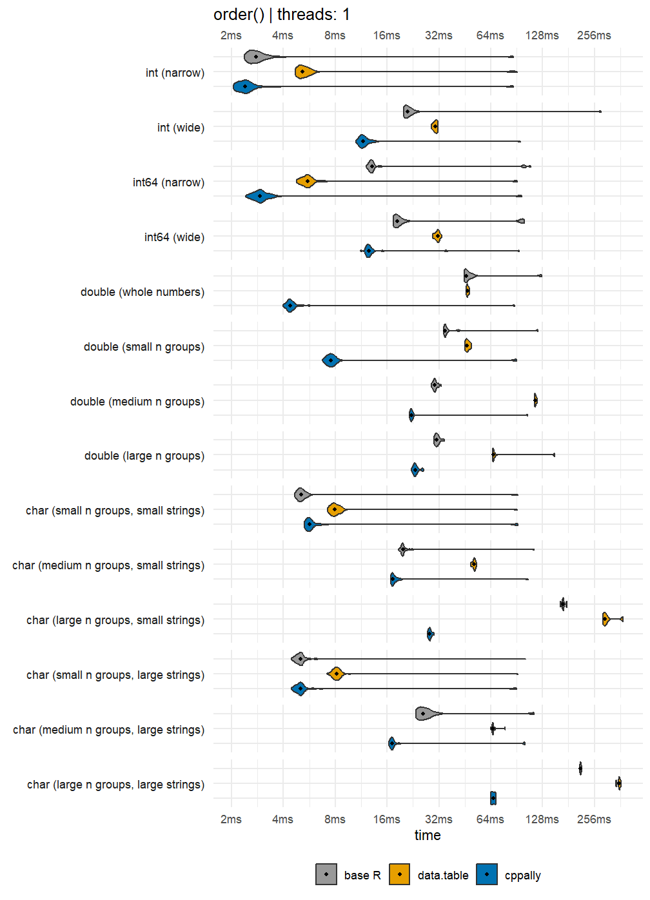
purrr::iwalk(multi_threaded_sort_comparisons,
\(res, nm){
res |>
plot_bench(paste("order()", "|", nm)) |>
print()
})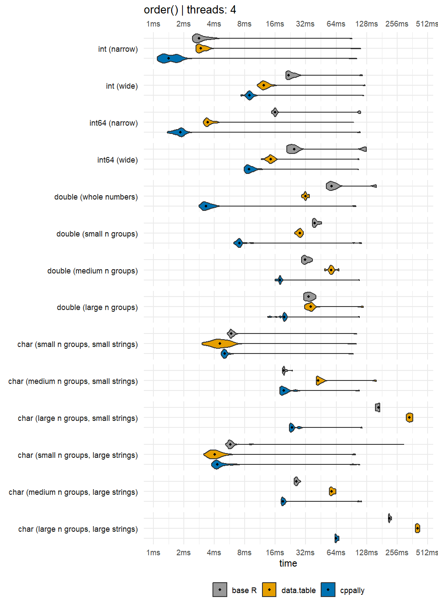
Data with NAs
It would also be useful to see the same comparisons but for data with lots of NAs.
# Fill data with 20% NAs
benchmark_data_with_nas <- lapply(benchmark_data, \(x){
x[sample.int(length(x), floor(length(x) * 0.2))] <- NA
x
})Let’s re-confirm that cppally produces correct results.
Sorting benchmark on NA-filled data
single_threaded_sort_comparisons <- compare(benchmark_data_with_nas, sort_fns, threads = 1L)
invisible(gc())
multi_threaded_sort_comparisons <- compare(benchmark_data_with_nas, sort_fns, threads = max_threads)
purrr::iwalk(single_threaded_sort_comparisons,
\(res, nm){
res |>
plot_bench(paste("order()", "|", nm)) |>
print()
})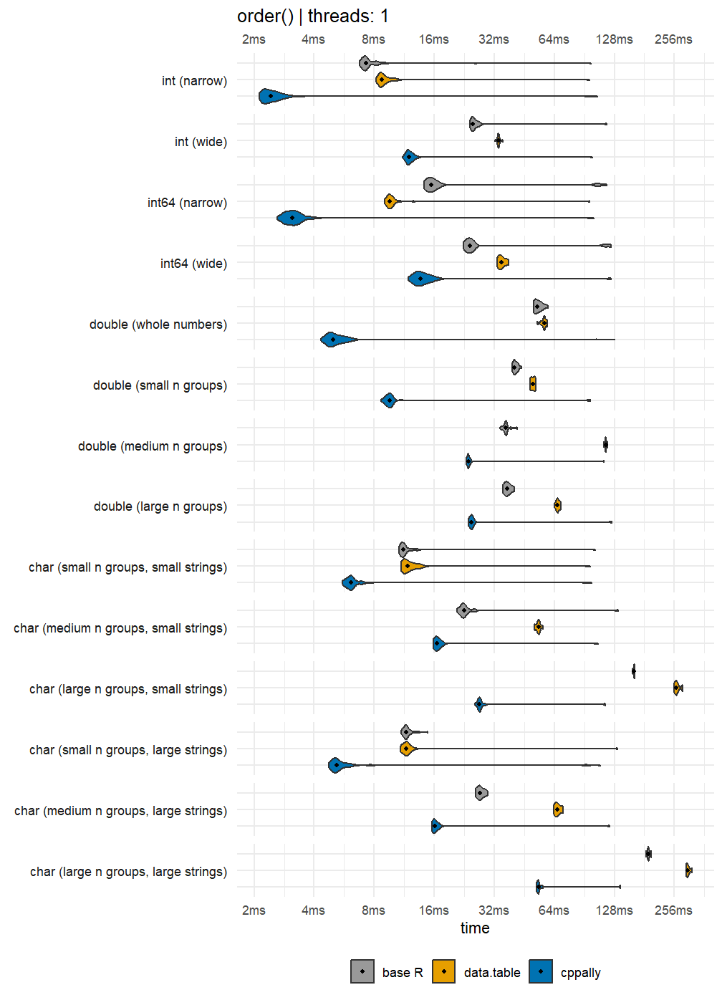
purrr::iwalk(multi_threaded_sort_comparisons,
\(res, nm){
res |>
plot_bench(paste("order()", "|", nm)) |>
print()
})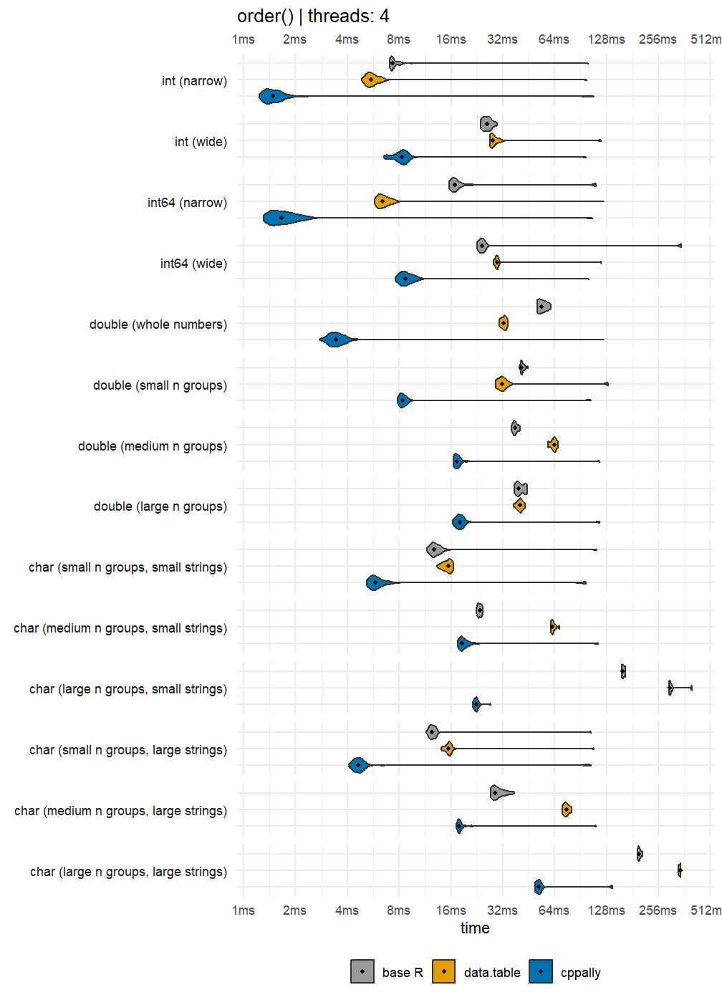
Group IDs
template <RVector T>
[[cppally::register]]
r_vector<r_int> cpp_group_id(T x, bool ordered){
return make_groups(x, ordered).ids;
}make_groups() creates a C++ class groups,
which holds group IDs of the data, the number of unique groups, and
other useful group metadata. Unordered IDs assign group IDs by
order-of-first-appearance, while ordered group IDs assign them in sorted
order. We compare unordered group IDs against
collapse::group() and ordered group IDs against
collapse::GRP().
Unordered group ID correctness check
for (d in benchmark_data){
is_identical <- identical(cpp_group_id(d, ordered = FALSE) + 1L, as.integer(collapse::group(d)))
if (!is_identical){
stop("Not identical, please check")
}
}
rm(d)
invisible(gc())Unordered group IDs
unordered_group_id_comparisons <- compare(
benchmark_data,
list(
collapse = \(x) collapse::group(x),
cppally = \(x) cpp_group_id(x, ordered = FALSE)
),
threads = 1L
)
purrr::iwalk(
unordered_group_id_comparisons,
\(res, nm){
res |>
plot_bench(paste("Unordered group IDs", "|", nm)) |>
print()
}
)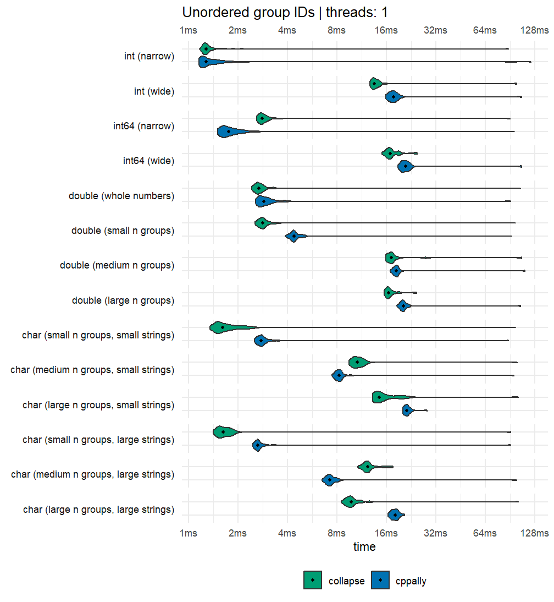
Ordered group ID correctness check
Ordered group IDs
ordered_group_id_comparisons <- compare(
benchmark_data,
list(
collapse = \(x) collapse::GRP(x, sort = TRUE, return.order = FALSE, return.groups = FALSE)$group.id,
cppally = \(x) cpp_group_id(x, ordered = TRUE)
),
threads = 1L
)
purrr::iwalk(
ordered_group_id_comparisons,
\(res, nm){
res |>
plot_bench(paste("Ordered group IDs", "|", nm)) |>
print()
}
)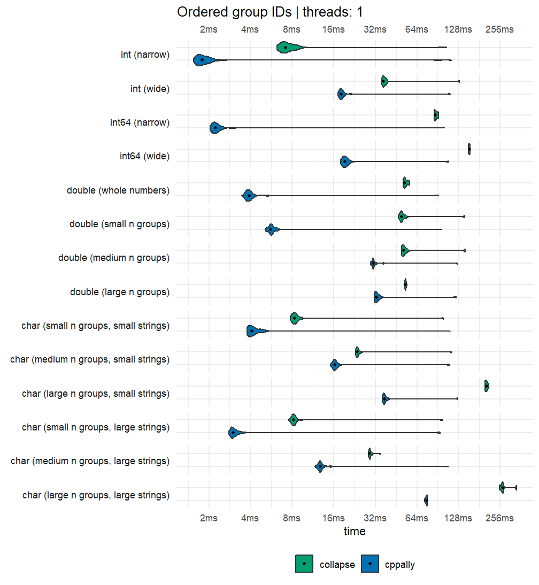
Statistical summaries
template <RNumber T>
[[cppally::register]]
r_dbl cpp_sum(r_vector<T> x){
return as<r_dbl>(sum(x, /*na_rm = */ true));
}
template <RNumber T>
[[cppally::register]]
T cpp_min(r_vector<T> x){
return range(x, /*na_rm = */ true).get(0);
}
template <RNumber T>
[[cppally::register]]
r_dbl cpp_var(r_vector<T> x){
return var(x, /*na_rm = */ true);
}
template <RNumber T>
[[cppally::register]]
r_vector<r_dbl> cpp_quantile(r_vector<T> x, r_vector<r_dbl> probs){
return quantile(x, probs, /*na_rm = */ true, /*names = */ false);
}For the statistical and grouped statistical summaries we will use 1 thread.
set_threads_all(1)We compare against the ‘collapse’ equivalents fsum(),
fmin(), fvar() and
fquantile().
set.seed(42)
stat_data <- list(
integer = sample.int(100, n, replace = TRUE),
double = rnorm(n)
)
probs <- c(0.1, 0.5, 0.9)
stat_fns <- list(
sum = list(
collapse = \(x) collapse::fsum(x, na.rm = TRUE),
cppally = cpp_sum
),
min = list(
collapse = \(x) collapse::fmin(x, na.rm = TRUE),
cppally = cpp_min
),
variance = list(
collapse = \(x) collapse::fvar(x, na.rm = TRUE),
cppally = cpp_var
),
quantiles = list(
collapse = \(x) collapse::fquantile(x, probs, na.rm = TRUE, names = FALSE),
cppally = \(x) cpp_quantile(x, probs)
)
)
for (stat in names(stat_fns)){
p <- compare(stat_data, stat_fns[[stat]], threads = 1L) |>
pluck(1) |>
plot_bench(stat)
print(p)
}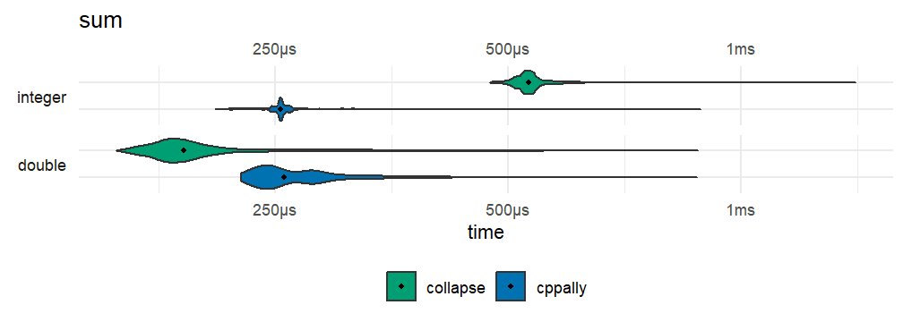
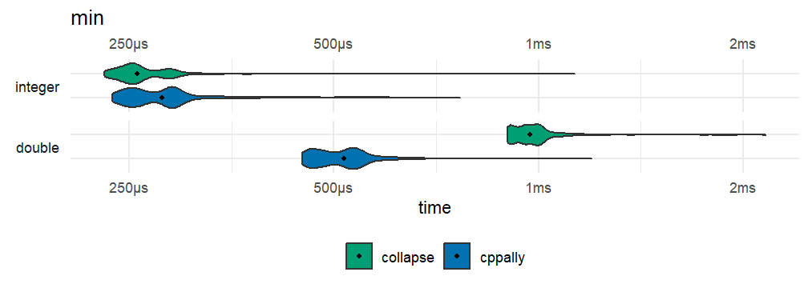
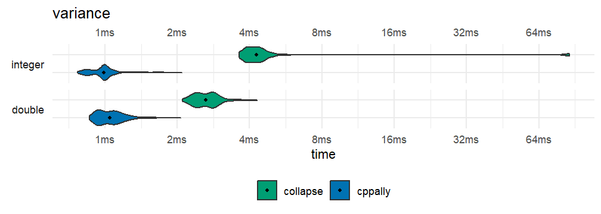
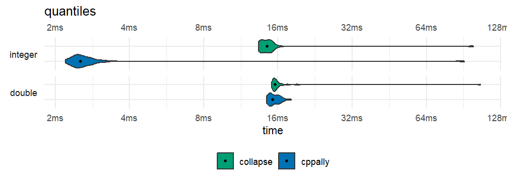
Grouped statistical summaries
[[cppally::register]]
r_vector<r_dbl> grouped_sum(r_vector<r_dbl> x, r_vector<r_int> g){
groups grps = make_groups(g, /*ordered = */ true);
return apply_by_group(x, grps, [](const r_vector<r_dbl>& chunk){
return sum(chunk, /*na_rm = */ true);
});
}
[[cppally::register]]
r_vector<r_dbl> grouped_min(r_vector<r_dbl> x, r_vector<r_int> g){
groups grps = make_groups(g, /*ordered = */ true);
return apply_by_group(x, grps, [](const r_vector<r_dbl>& chunk){
return range(chunk, /*na_rm = */ true).get(0);
});
}
[[cppally::register]]
r_vector<r_dbl> grouped_var(r_vector<r_dbl> x, r_vector<r_int> g){
groups grps = make_groups(g, /*ordered = */ true);
return apply_by_group(x, grps, [](const r_vector<r_dbl>& chunk){
return var(chunk, /*na_rm = */ true);
});
}
[[cppally::register]]
r_vector<r_dbl> grouped_quantile(r_vector<r_dbl> x, r_vector<r_int> g, double prob){
groups grps = make_groups(g, /*ordered = */ true);
return apply_by_group(x, grps, [prob](const r_vector<r_dbl>& chunk){
return quantile(chunk, prob, /*na_rm = */ true);
});
}Here each benchmark takes a vector x and a vector of
groups g. It then returns one result per group, in sorted
group order. Therefore the time it takes to build the groups into a
format each distinct library can handle is part of the benchmark.
- ‘collapse’ uses
fsum(),fmin(),fvar()andfmedian() - ‘data.table’ uses
[withkeyby, where sum, min, max, variance and median are all optimised internally (via GForce) - cppally uses
apply_by_group()as shown above
Note: apply_by_group() is a generic
functional that accepts any C++ function (lambda). This means that it is
expected to be slower than a hand-written optimised
method. If it can achieve speeds that are similar in magnitude to the
hand-written ones, then that is more than good enough given that it is
meant to be generic.
set.seed(42)
x <- rnorm(n)
g <- sample.int(10^5, n, replace = TRUE)
grouped_data <- list(
`double (100k groups)` = list(x = x, g = g, dt = data.table(x = x, g = g))
)
grouped_fns <- list(
sum = list(
collapse = \(d) collapse::fsum(d$x, d$g, na.rm = TRUE, use.g.names = FALSE),
data.table = \(d) d$dt[, sum(x, na.rm = TRUE), keyby = g],
cppally = \(d) grouped_sum(d$x, d$g)
),
min = list(
collapse = \(d) {
collapse::fmin(d$x, d$g, na.rm = TRUE, use.g.names = FALSE)
},
data.table = \(d) d$dt[, .(min(x, na.rm = TRUE)), keyby = g],
cppally = \(d) grouped_min(d$x, d$g)
),
variance = list(
collapse = \(d) collapse::fvar(d$x, d$g, na.rm = TRUE, use.g.names = FALSE),
data.table = \(d) d$dt[, var(x, na.rm = TRUE), keyby = g],
cppally = \(d) grouped_var(d$x, d$g)
),
median = list(
collapse = \(d) collapse::fmedian(d$x, d$g, na.rm = TRUE, use.g.names = FALSE),
data.table = \(d) d$dt[, median(x, na.rm = TRUE), keyby = g],
cppally = \(d) grouped_quantile(d$x, d$g, 0.5)
)
)
for (stat in names(grouped_fns)){
p <- compare(grouped_data, grouped_fns[[stat]], threads = 1L) |>
pluck(1) |>
plot_bench(paste("Grouped", stat))
print(p)
}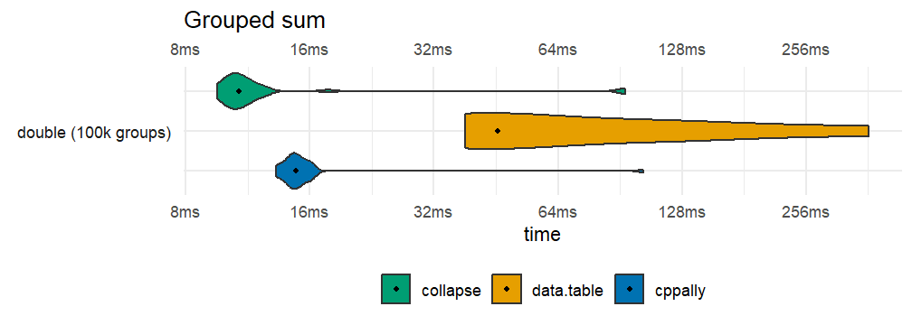
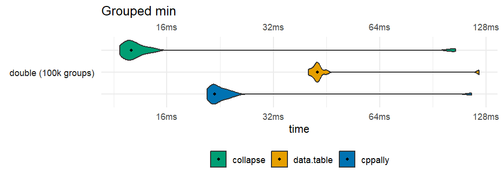
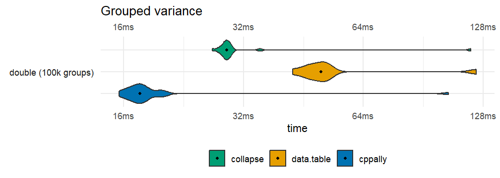
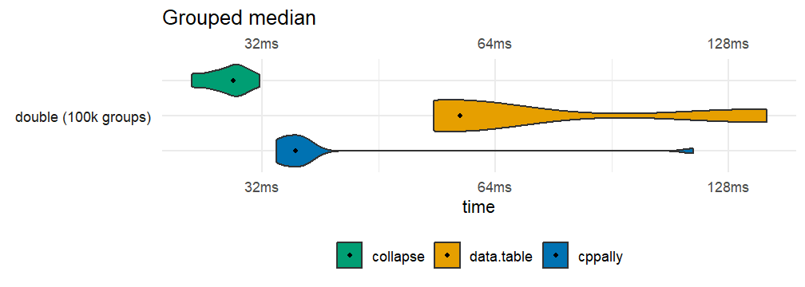
Session details
collapse::set_collapse(old_collapse_threads)
data.table::setDTthreads(old_dt_threads)
set_cppally_threads(1L)
data.frame(
package = c("cppally", "data.table", "collapse", "bit64"),
version = vapply(
c("cppally", "data.table", "collapse", "bit64"),
\(pkg) as.character(packageVersion(pkg)), ""
)
) |>
knitr::kable(row.names = FALSE)| package | version |
|---|---|
| cppally | 1.1.0.9000 |
| data.table | 1.18.6.1 |
| collapse | 2.1.8 |
| bit64 | 4.8.6 |
R.version.string
#> [1] "R version 4.6.0 (2026-04-24 ucrt)"